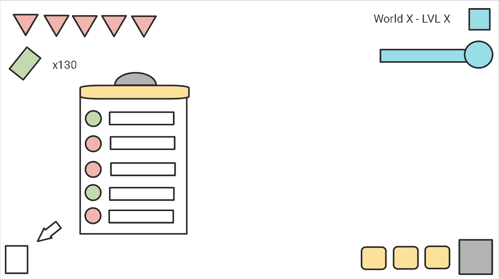
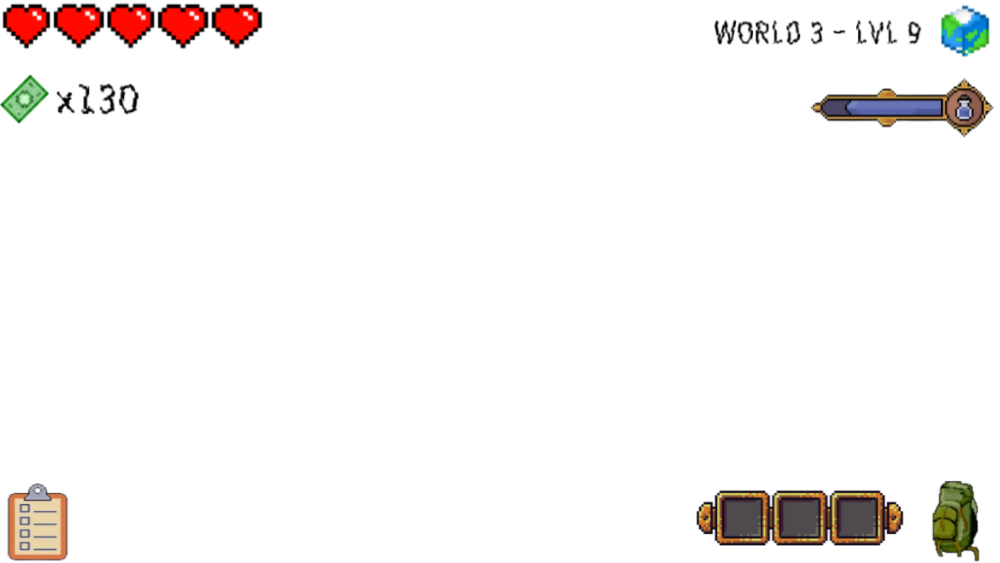
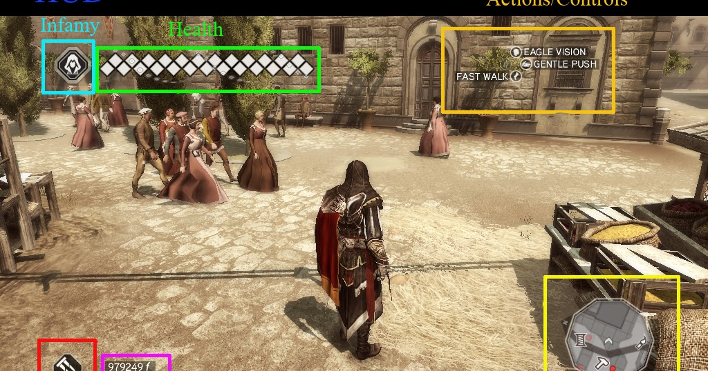
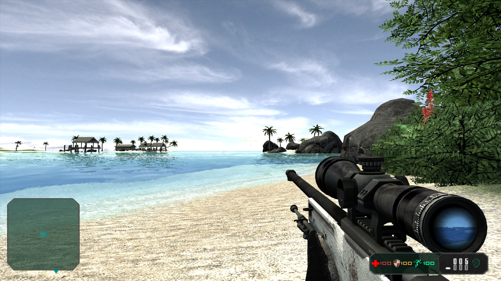
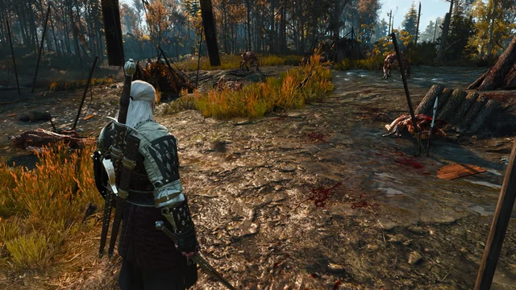
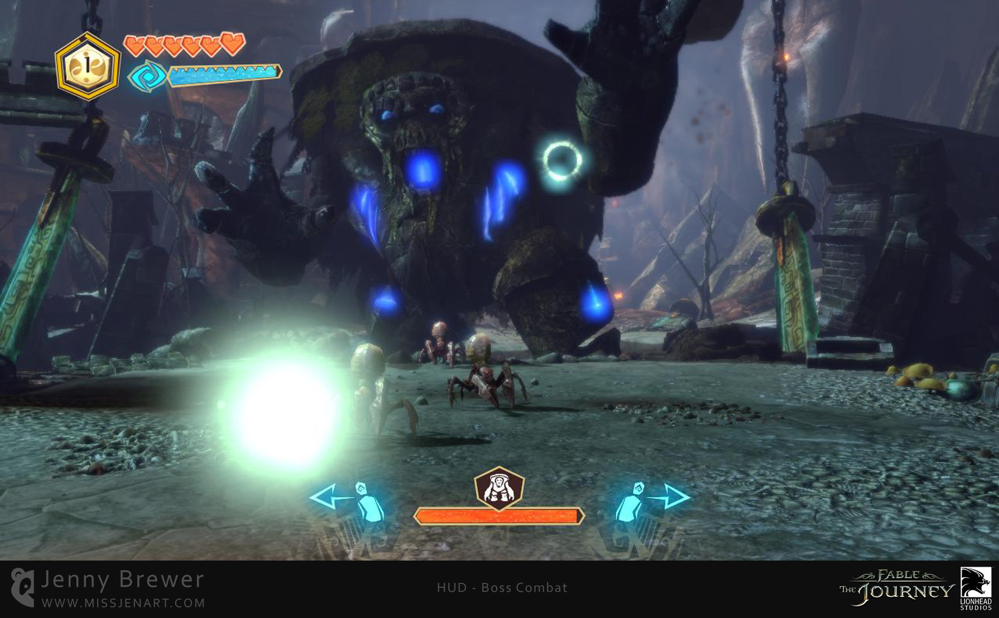
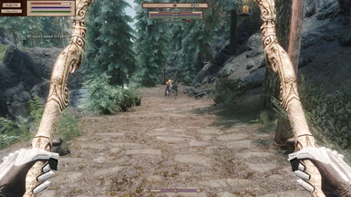
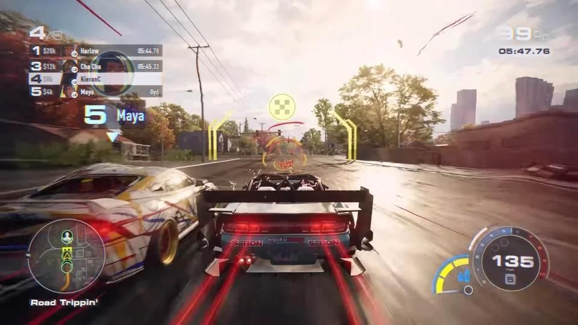
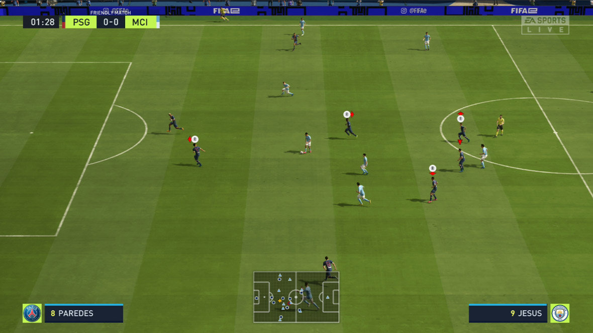
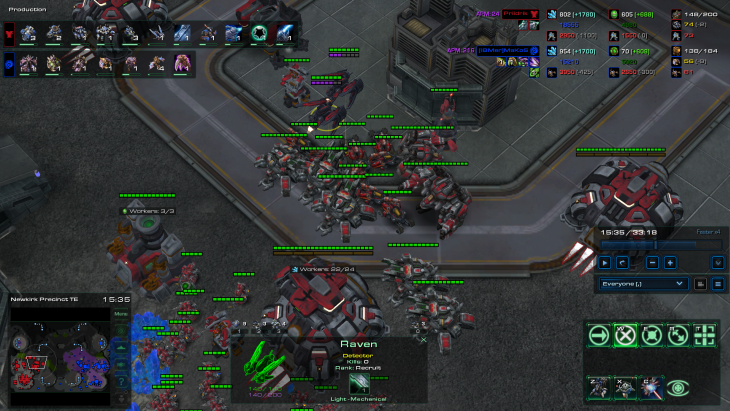

Creació d'un HUD
Dissey del HUD
El disseny HUD està fet amb Pixel Art, el mateix disseny, al personatge deㅤles 3 C's .
Concepte (04/02/2024):
Acabat (09/02/2024)
Análisis del HUD
El HUD, està dissenyat d'una forma, visible, on nomès estarà els detalls principals de qualsevol HUD, com la vida, el nivell (estil Mario Bros), els crèdits (monedes, billets, punts), entre altres coses que es poden veure.
Aquest disseny és un exemple de HUD complet.
Disseny d'un HUD
Concepte
- Elements Bàsics:
- Barra de salut/energia: Mostra l'estat actual del personatge del jugador.
- Munició/Recursos: Indica la quantitat de bales, fletxes o qualsevol recurs important.
- Mapa/Bruixola: Proporciona informació sobre l'entorn i la ubicació del jugador.
- Objectius/Missions: Resalta els objectius actuals o missions que ha de completar el jugador.
- Puntuació/Premis: Mostra la puntuació del jugador i les recompenses obtingudes.
- Disseny No Intrusiu:
- La informació del HUD ha de ser clara i fàcil de llegir sense distreure massa el jugador.
- Pot ser semi-transparent o minimalista per no obstructir la vista del joc.
- Personalització:
- Sovint, els jugadors poden personalitzar el seu HUD, triant quins elements volen mostrar i la seva ubicació a la pantalla.
- Animacions i Retroalimentació Visual:
- El HUD pot incloure animacions per indicar esdeveniments importants, com ara danys rebuts, nivell de càrrega d'habilitats, etc.
- Retroalimentació visual clara, com canvis de color o efectes visuals, ajuda els jugadors a entendre la informació d'una ullada.
- Adaptació al Contexte:
- El HUD ha de adaptar-se al context del joc. Per exemple, un joc d'angoixa pot tenir un disseny més tènue i minimalista, mentre que un joc de ciència-ficció pot tenir elements més futuristes.
- Integració amb el Món del Joc:
- Alguns jocs busquen integrar la interfície del HUD directament en el món del joc, en lloc de simplement superposar-la. Això pot incloure elements com casc virtuals o projeccions hologràfiques.
- Elements Dinàmics:
- El HUD pot canviar dinàmicament per reflectir l'estat del joc. Per exemple, durant un enfrontament, podria ressaltar informació sobre l'enemic actual.
- Indicadors d'Equip:
- En jocs multijugador, el HUD sovint inclou indicadors de companys d'equip, els seus estats i ubicacions.
- Informació Contextual:
- El HUD ha de proporcionar informació contextual basada en la situació del joc, com l'estat del vehicle en un joc de conducció o l'estat d'agressió en un joc d'acció.
- Legibilitat i Mida:
- La legibilitat és essencial. La mida dels elements del HUD ha de ser prou gran perquè els jugadors puguin llegir la informació sense esforç.
Altres dissenys de HUDs
HUD Tradicional
Descripció: Inclou barres de salut, munició i altres elements visuals superposats a la pantalla per proporcionar informació clau.
Exemple: "Call of Duty" utilitza un HUD tradicional amb indicadors de salut, munició i mapes.

HUD Dinàmic
Descripció: Canvia segons la situació del joc, mostrant només la informació rellevant en moments específics per evitar saturar la pantalla.
Exemple: "Assassin's Creed" adapta el HUD segons les activitats del personatge, com mostrar mapes i objectius quan són necessaris.
HUD Contextual
Descripció: Ofereix informació específica basada en la ubicació del jugador o l'activitat actual en el joc.
Exemple: A "Far Cry", el HUD s'ajusta segons si el jugador està explorant, combatent o en mode sigilós.
HUD Transparent
Descripció: Els elements del HUD són semitransparents per no obstaculitzar la vista del joc, tornant-se més visibles quan és necessari.
Exemple: "The Witcher 3" utilitza un HUD transparent que es torna més visible en moments clau.
HUD Realitat Augmentada
Descripció: Integra informació virtual a l'entorn del món real del jugador, superposant-la a través de la càmera del dispositiu.
Exemple: "Pokémon GO" utilitza un HUD d'AR per mostrar Pokémon en el món real.

HUD Minimalista
Descripció: Simplifica la interfície eliminant elements innecessaris, centrant-se en una presentació neta i simple.
Exemple: "Journey" utilitza un disseny minimalista que enfatitza la narrativa visual.
HUD de Rol
Descripció: Proporciona informació detallada sobre estadístiques del personatge, habilitats i equip.
Exemple: A "The Elder Scrolls V: Skyrim", el HUD de RPG mostra salut, màgia, resistència i altres estadístiques.
HUD de Conducció
Descripció: Mostra informació específica per a la conducció, com velocitat, combustible i direcció.
Exemple: A "Need for Speed", el HUD de conducció mostra la velocitat actual, medidor de nitro i posició en la carrera.
HUD d'Esports
Descripció: Presenta estadístiques i punts en temps real durant esdeveniments esportius virtuals.
Exemple: La sèrie "FIFA" utilitza un HUD d'esport que mostra el marcador, targetes i altres estadístiques rellevants.
HUD d'Estratègia en Temps Real
Descripció: Inclou informació sobre recursos, unitats i mapes estratègics per a la presa de decisions.
Exemple: "StarCraft II" utilitza un HUD d'estratègia en temps real que mostra recursos, subministraments i mapes detallats.
